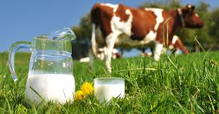

चिकित्सा में पंचगव्य क्यों महत्वपूर्ण है?
----------------------------------------
गाय के दूध, घृत, दधी, गोमूत्र और गोबर
के रस को मिलाकर पंचगव्य तैयार
होता है। पंचगव्य के प्रत्येक घटक द्रव्य
महत्वपूर्ण गुणों से संपन्न हैं।
इनमें गाय के दूध के समान पौष्टिक और
संतुलित आहार कोई नहीं है। इसे अमृत
माना जाता है। यह विपाक में मधुर,
शीतल, वातपित्त शामक, रक्तविकार
नाशक और सेवन हेतु सर्वथा उपयुक्त है।
गाय का दही भी समान रूप से जीवनीय
गुणों से भरपूर है। गाय के दही से
बना छाछ पचने में आसान और पित्त
का नाश करने वाला होता है।
गाय का घी विशेष रूप से नेत्रों के लिए
उपयोगी और बुद्धि-बल दायक होता है।
इसका सेवन कांतिवर्धक माना जाता है।
गोमूत्र प्लीहा रोगों के निवारण में परम
उपयोगी है। रासायनिक दृष्टि से देखने
पर इसमें पोटेशियम, मैग्रेशियम, कैलशियम,
यूरिया, अमोनिया, क्लोराइड,
क्रियेटिनिन जल एवं फास्फेट आदि द्रव्य
पाये जाते हैं।
गोमूत्र कफ नाशक, शूल गुला, उदर रोग,
नेत्र रोग, मूत्राशय के रोग, कष्ठ, कास,
श्वास रोग नाशक, शोथ, यकृत रोगों में
राम-बाण का काम करता है।
चिकित्सा में इसका अन्त: बाह्य एवं
वस्ति प्रयोग के रूप में उपयोग
किया जाता है। यह अनेक पुराने एवं
असाध्य रोगों में परम उपयोगी है।
गोबर का उपयोग वैदिक काल से आज तक
पवित्रीकरण हेतु भारतीय संस्कृति में
किया जाता रहा है।
यह दुर्गंधनाशक, पोषक, शोधक, बल वर्धक
गुणों से युक्त है। विभिन्न वनस्पतियां,
जो गाय चरती है उनके गुणों के प्रभावित
गोमय पवित्र और रोग-शोक नाशक है।
अपनी इन्हीं औषधीय गुणों की खान के
कारण पंचगव्य चिकित्सा में
उपयोगी साबित हो रहा है।
चिकित्सा में पंचगव्य क्यों महत्वपूर्ण है?
----------------------------------------
गाय के दूध, घृत, दधी, गोमूत्र और गोबर
के रस को मिलाकर पंचगव्य तैयार
होता है। पंचगव्य के प्रत्येक घटक द्रव्य
महत्वपूर्ण गुणों से संपन्न हैं। इनमें गाय के
दूध के समान पौष्टिक और संतुलित आहार
कोई नहीं है। इसे अमृत माना जाता है।
यह विपाक में मधुर, शीतल, वातपित्त
शामक, रक्तविकार नाशक और सेवन हेतु
सर्वथा उपयुक्त है। गाय
का दही भी समान रूप से जीवनीय गुणों से
भरपूर है। गाय के दही से बना छाछ पचने
में आसान और पित्त का नाश करने
वाला होता है। गाय का घी विशेष रूप से
नेत्रों के लिए उपयोगी और बुद्धि-बल
दायक होता है। इसका सेवन कांतिवर्धक
माना जाता है। गोमूत्र प्लीहा रोगों के
निवारण में परम उपयोगी है। रासायनिक
दृष्टि से देखने पर इसमें पोटेशियम,
मैग्रेशियम, कैलशियम, यूरिया, अमोनिया,
क्लोराइड, क्रियेटिनिन जल एवं फास्फेट
आदि द्रव्य पाये जाते हैं। गोमूत्र कफ
नाशक, शूल गुला, उदर रोग, नेत्र रोग,
मूत्राशय के रोग, कष्ठ, कास, श्वास रोग
नाशक, शोथ, यकृत रोगों में राम-बाण
का काम करता है। चिकित्सा में
इसका अन्त: बाह्य एवं वस्ति प्रयोग के
रूप में उपयोग किया जाता है। यह अनेक
पुराने एवं असाध्य रोगों में परम
उपयोगी है। गोबर का उपयोग वैदिक
काल से आज तक पवित्रीकरण हेतु भारतीय
संस्कृति में किया जाता रहा है। यह
दुर्गंधनाशक, पोषक, शोधक, बल वर्धक
गुणों से युक्त है। विभिन्न वनस्पतियां,
जो गाय चरती है उनके गुणों के प्रभावित
गोमय पवित्र और रोग-शोक नाशक है।
अपनी इन्हीं औषधीय गुणों की खान के
कारण पंचगव्य चिकित्सा में
उपयोगी साबित हो रहा है